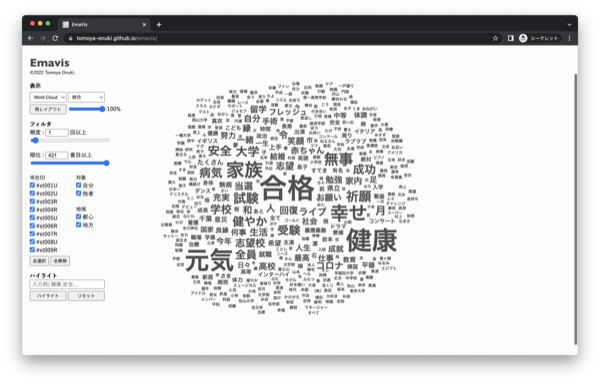

Emavis
2022.12 / Visualization



概要
Emavisは絵馬に書かれた願い事を可視化するプロジェクトである。
私たちは日本各地の寺社仏閣を訪れ絵馬を調査し、"絵馬データベース"を作成した。 現在は7つの寺社仏閣で収集した223の願い事を可視化した。
ワードクラウドや棒グラフを基本とした視覚表現を表示することで、どの神社で誰に向けてどんな願いを書いたかを分析することが可能である。
手法
- 日本各地の寺社仏閣を訪れ絵馬を調査し、"絵馬データベース"を作成した。
- 絵馬に書かれた願い事が自分に向けられたものか他者へ向けられたものかで分類した。
- 願い事を形態素解析し、各単語の出現回数を集計した。
Development
javascript, D3.js, kuromoji.js, chroma.js